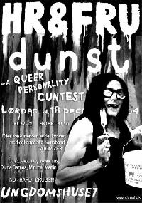

| 10. December 2004 |
"HRogFRU dunst 2004 - a queer personality cuntest" er den noget foruroligende overskrift på performance-gruppen Dunst's kommende arrangement der med garanti løber af sporet 18/12 i Ungdomshuset på Jagtvej. Årets HR og FRU dunst skal kåres, og alle kan stille op i kategorier som "hetero", "helvede", "strik" og "plørehul".

I Ungdomshuset på Jagtvej i København indbydes der lørdag 18/12 til kåring af HR og FRU dunst 2004 med efterfølgende fest. Det overordnede tema er som altid trash og dårlig smag, og alle har mulighed for at tage del i kampen.Kategorierne man kan stille op i er: Hetero, Reality, Hår, Helvede, Buler, Mad, Strik, Neon, Poppers, Billig, Høj, Plørehul og Dyr. Som deltager vælger man 2 kategorier og gør så sit ypperste for at udtrykke temaet mest effektivt. Kåringen foretages af en jury og af publikum. Vil du selv deltage, så skal du skynde dig, for sidste frist for tilmelding er officielt 10/12.
Udover de sædvanlige DJ's Djuna Barnes, Stimulundia, Rosa Lux, AleX.T.C. og Minimal Martin kommer også bøsseduoen Atomizer fra London. Entréen til arrangementet er 60 kroner, og stanken begynder at brede sig fra kl. 21.00.
Reference:
http://homotropolis.dk/kultur/artikel.php?id=2515
Print denne side